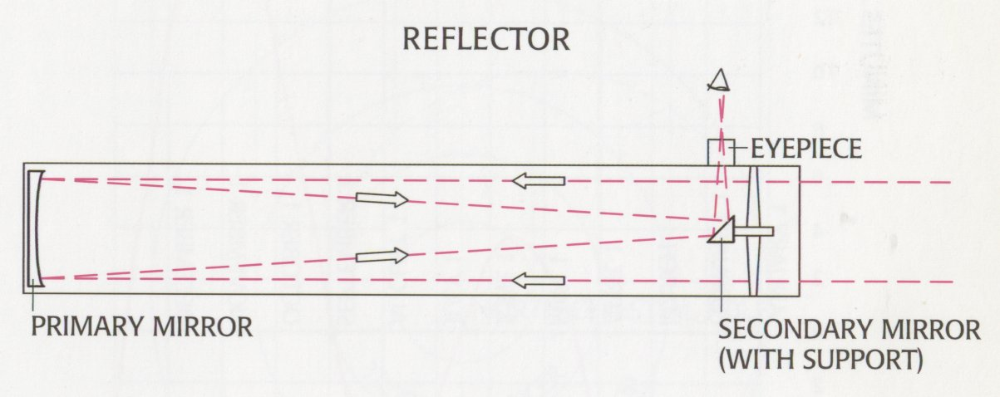

The Reflector Telescope
About Reflector Telescope ==>
A reflector telescope is a type of telescope that uses mirrors to reflect and focus light.
The most common design is the Newtonian reflector, which uses a concave primary mirror
to gather light and a flat secondary mirror to reflect the light to an eyepiece located at
the side of the telescope. Reflector telescopes are known for their large aperture size,
which allows for the collection of a large amount of light and the observation of faint
objects in the night sky.
They are also relatively inexpensive compared to other types of telescopes, such as refractor telescopes.
However, reflector telescopes require regular maintenance of their mirrors and can be affected by "mirror flop"
which makes it difficult to maintain accurate focus while observing.
Here we will provide list of items and measurements for the telescope having a 130mm primary mirror
Items Required ==>
- 130mm diameter primary mirror
- 12mm Secondary mirror
- 650mm long telescope tube
- Mirror cell to hold the primary mirror in place
- Eyepiece holder or focuser to hold the eyepiece at the end of the telescope
- Eyepiece(s) of various focal lengths
- Finder scope and mount
- Tripod or mount for the telescope
- Tools such as a saw, drill, and screwdrivers for assembly
- Adhesives and sealants for attaching the mirrors and other components
- Collimation tools to align the mirrors correctly
- Paint or other coatings for protecting the telescope tube and other parts.
Steps To Make a Reflector Telescope ==>
- Gather materials
- Plan the design
- Cut the telescope tube
- Mount the primary mirror
- Mount the secondary mirror
- Install the eyepiece holder
- Install the finder scope
- Install the tripod
- Collimate the mirrors
- Finalize the telescope
- Test the telescope
* follow layout in the picture below ==>
